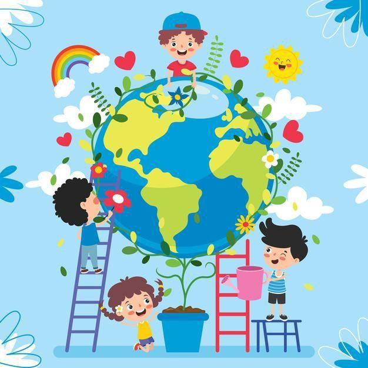

IMPORTANCIA
1. *Sustento de la Vida*: Proporciona recursos vitales como agua, alimentos y aire limpio, esenciales para la supervivencia de todos los seres vivos.
2. *Biodiversidad y Equilibrio Ecológico*: Mantiene una amplia variedad de especies y ecosistemas, lo que es crucial para el equilibrio ecológico y la salud del planeta.
3. *Regulación Climática*: Ayuda a regular el clima y mitigar el cambio climático a través de procesos naturales como la absorción de gases de efecto invernadero.
4. *Salud Pública*: Un medio ambiente limpio y saludable reduce el riesgo de enfermedades y mejora la calidad de vida de las personas.
5. *Recursos Económicos*: Proporciona materias primas, oportunidades para el turismo y actividades económicas, contribuyendo al desarrollo sostenible de las comunidades.

| ANT | SIG |